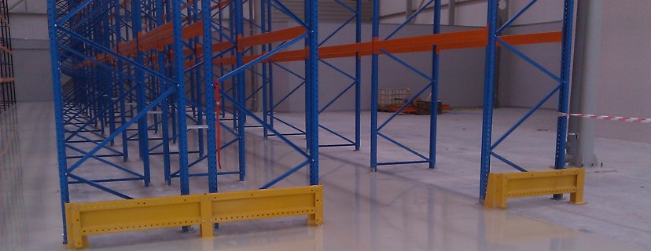

About TLP
Tirana Logistic Park (TLP) is the biggest project in the field of logistics in Albania and one of the most modern in the Western Balkans. It considers construction of five warehouses and industrial buildings of Class A, in Albanian biggest industrial zone, the highway between Tirana-Durres. With a net construction area of 80,000 m2, developed into a total land of 200,000 m2, Tirana Logistic Park is offering not just industrial and storage premises of highest quality, but also a full range of logistics services, including customs services, for a wide range of businesses’ profiles. Connection to the main axes of national and international road transport was intended to serve businesses operating in Albania and those operating in Kosovo, Macedonia, Montenegro and wider in the region.
After completion of the first building of 15,200 m2 and all relevant first phase infrastructure Tirana Logistic Park has hosted its first customers, who are already operating and benefiting from some of the best and the most modern logistic facilities, in Albania. The presence inside the park of local and international logistic operator creates the possibilities to have not only more services but also a more quality. This facilitates too the logistic services for businesses of all sizes and profiles. Tirana Logistic Park is a joint investment realized by cooperation between BALFIN Group and AlbStar ltd.
Services
Tirana Logistic Park offers these logistics services directly or through the logistic partners that operate in it. The intention is not just to provide logistic services, but to have flexible solution for customers, in order improve operating processes, by reducing operational costs.
The logistic park covers completely:
- Management and maintenance of Park’s engineering systems
- Security service and 24-hour surveillance
- Maintenance of common areas and periodic cleaning of the territory
- Uninterrupted and qualitative power and water supply, internet and landline phone communication
- Periodic evading of the waste
- Maintenance of the green area
TRANSPORT
National and International Transport alternatives
STORAGE
Storage on pallet level using high capacity storage systems and racks
INVENTORY
Inventory and selection of goods
LATEST TECHNOLOGY
Latest technology and techniques, in products handling, loading & unloading, circulation of pallets using industrial forklifts
DISTRIBUTION
INTRA LOGISTICS


Biggest project in the field of logistics in Albania
One of the most modern in the Western Balkans
m2 net construction area
m2 total land
Kilometers Coverage of local market
Hour surveillance
Advantages
ACCOMMODATION
Easy accommodation on its premises, accompanied with the possibility of receiving customs service inside the Park helps companies to reduce costs of storage and distribution.

LOCATION
Its location is the main advantage of the Tirana Logistic Park, just on the main industrial area of Albania (Tirana-Durres highway), close to the capital city, to the only international airport, and to the largest port in the country.
FIRST LOGISTIC CENTER OF EUROPEAN STANDARDS
Tirana Logistic Park is the first logistics center of European standards in Albania, which includes warehouse space for storage, industrial premises of highest standards, coupled with offices and social premises, which can be fitted easily, in accordance to the clients’ needs.
FACILITATION
Facilitation in carrying out customs procedures, within the premises of Tirana Logistics Park.
DIRECT ACCESS
Direct access to the railway system, which is implemented through a dedicated rail terminal.
COVERAGE OF LOCAL MARKET
Coverage of biggest local market in a radius of 30km, within just 30 minutes drive.
DETAILED ANALYSIS
The package of services and prices are built on basis of detailed analyses of the profiles of businesses, considered as potentials, their needs and their possibilities to fit themselves on this project, by proposing optimal services and solutions, in order to reduce their operation expenses.
Technical Details
Tirana Logistic Park is designed to meet the best international standards of modern logistic parks. It provides maximum technical conditions and security by meeting European standards.

-
April 2015 – The development of the necessary infrastructure for enabling custom procedures starts in Tirana Logistic Park
Tirana Logistic Park just starting the development of the infrastructure for conducting customs clearance procedures inside its premises. This will enable the businesses to receive full logistic services directly or through a partnership with authorized logistic operators. The aim is not only full utilization of the logistic services provided, but also offering better alternatives for clients to improve their operation processes, customer service levels, by reducing the needed time for their products to be present into the main markets and generally in cutting, their operational costs.
-
Mars 2015- Start of groundbreaking works for construction of a loading platform from the dedicated railway terminal inside the Tirana Logistic Park premises.
Loading platform, which just started to be build inside the park premises is going to be an added value element of this project. Different businesses should start using more frequently railway for transporting their own goods, in meantime the loading-unloading platform should help them in facilitating this process and bring down the respective operations costs. It is widely known that, rail transport represents currently one of the cheapest transport modes, basically creating enough potential for the regional business entities, mostly the ones from Kosovo and Macedonia, to use and benefit from the revitalization and investments plans, which are being considered on regional and further European railway governing bodies. Pretty soon the logistic park would be turned into a regional transport hub, where businesses can group their goods, before delivering them, to the final destination. At the same time, this platform makes real on operation level, the communication between TLP rail terminal with International rail network and Albanian ports.
-
November 2014- Milsped Albania extends its leasing of warehouse space in Tirana Logistic Park, with an extra 1000sqm.
Milsped Albania extends its’ storage space with 1000sqm at the Tirana Logistic Park responding to the increase of the operations volume, number of clients as well as new logistic contracts. Milsped Albania leased area has totaled more than 4000sqm.
-
August 2014- Milsped Albania, the 3 PL operator of Tirana Logistic Park is licensed to offer the service of customs storage
The Albanian Customs Directorate has licensed Milsped Albania, to offer the customs warehousing. About 600 m2, public customs warehouse of type A will be used by local and foreign businesses to store products, which do need to go immediately through customs clearance procedures. Such service should simplify their logistic operations and also support them, financially.
-
May 2014-Neptun signs a lease contract and deploys its logistic activities in Tirana Logistic Park
Neptun shpk, the largest network of electronic goods and appliances in Albania and one of the largest in the region, has signed a 5 years lease agreement for a warehouse space of 3200m2 with Tirana Logistic Park, with the intention of immediate allocation of its logistic activity, inside these premises. The representatives of Neptun Albania expressed their satisfaction, regarding the quality of the storage facilities, and the simplicity of fitting the premises, to their specific demands.
-
March 2014- Milsped locates its offices and starts offering services to its clients inside Tirana Logistic Park
Milsped Albania starts offering services to its first client Carrefour & Marinopoulos, mainly in: Stock management; storage of food and nonfood products; order picking & commissioning according to the daily demand from its stores and hypermarket shops; Distribution service ,etc.
-
February 2014-Milsped Albania completes the construction of the refrigerated area inside the Tirana Logistic Park
In order to help the business entities that are interested in getting quality storage, even for products which need controlled temperature conditions, Milsped Albania is offering about 400m2 of it . This type of storage possibilities diversify the services offered inside the Park, guaranteeing the usage of latest technologies and highest standards in the product treatment and management, in order for the products to be supplied at the final customer, at the best physical conditions.
-
A lease agreement is signed in December 2013 between Tirana Logistic Park and Milsped Albania
Milsped Albania considered as the only logistic operator in Albania, which will offer to the Albanian market full professional logistic services has signed a lease agreement with Tirana Logistic Park. This agreement will Milsped Albania occupy space of 3000m2. Milsped Albania as part of Milsped Group, one of the regional leaders in the logistic business, established the ground for this company to turn into a success story in the Albanian market of logistic services, using to the most the advantages that Tirana Logistic Park,offers.
-
The first phase of the project is inaugurated October 2013
Nearly a year after the groundwork for the construction of the Tirana Logistic Park the ceremony of completing the works for the first phase takes place, the first storage facility of 15400 m2 and the necessary infrastructure. Tirana Logistic Park is considered by the economy experts as a very important development in the real estate market, especially those with industrial and logistic profile, because it creates all the conditions for businesses to obtain quality services, which did not exist before or were of low standards.
-
October 2012 – Beginning of works for the construction of Tirana Logistic Park
The groundwork ceremony of the first phase of Tirana Logistic Park project, is taking place amid the presence of Albanian government local business representatives, and the well-known media. This project which represents in itself the constructions and leasing of 5 major warehouses and Class A industrial buildings is located in Laknas, the largest industrial zone in Albania, in the Tirana-Durres highway, only 5 km away from the city center. With a construction surface of 80’000m2, extended in a land of 200’000 m2, Tirana Logistic Park represents the first logistic project of such dimensions in Albania, which will offer not only high quality industrial and warehousing premises but also a complete package of logistic services for different businesses ‘ profiles. This project comes as a result of the cooperation of Balfin Group with Albanian-American Fund for Development and a construction company Albstar shpk.
About Milsped
Milsped Albania is a joint venture 3PL company of Balfin Group and Milsped Group which operates in the field of logistics, allocated inside the premises of Tirana Logistics Park. Milsped Albania is considered at the moment, as the only logistic operator in Albania offering a full range of these services. Various local and regional companies in the different fields of business have already contracted Milsped Albania, in order to fulfil their logistic needs. In this way, they have managed to reduce operating costs and find optimal and flexible solutions for their daily business activities. Milsped Albania is part of the Milsped Group, one of the leading logistics providers in the Balkans. Through their branch offices in Balkan: Serbia, Montenegro, B&H, Croatia, Slovenia and Albania, Milsped Group are offering full range of services for almost 21 years and is counting about 1000 employees, on its payroll. The strategic orientation of the company is based on respect for established partnerships with customers, application of the latest technologies and social responsibility. Albania is growing stronger and stronger on its activity, by efficiently using advantages TLP provides.
The main services, that Milsped Albania is offering for its clients are:
Through a single negotiation and a single point of contact, Milsped Albania can cover completely, the full chain of logistic activities of any business entity, from point A (picking of products at the country of origin or at main supplier) to point Z (delivery of finished goods at the final customer).
Contact
Tirana Logistic Park is strategically positioned not just close to the key road corridors, but even near the sea and the air ones, enabling communication of the Western Balkans and Western Europe countries with the interior part of the continent. TLP is situated in the largest industrial of in the country, Tirana - Durrës highway, the area with the highest density of population in Albania.
Location:
Tirana Logistic Park, St. Gryka e Kacanikut, Tirane-Durres, Highway, km5, Behind Coca-Cola Factory Laknas,Kames, Tirane.
Email:
info@tlp.al
Call:
+355662003004